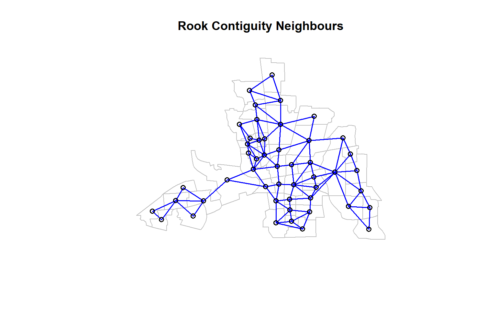

9 Spatial Neighbours
9.1 Package
9.2 Data
columbus <- st_read(system.file("shapes/columbus.gpkg", package="spData")[1], quiet=TRUE)
columbusSimple feature collection with 49 features and 20 fields
Geometry type: POLYGON
Dimension: XY
Bounding box: xmin: 5.874907 ymin: 10.78863 xmax: 11.28742 ymax: 14.74245
Projected CRS: Undefined Cartesian SRS with unknown unit
First 10 features:
AREA PERIMETER COLUMBUS_ COLUMBUS_I POLYID NEIG HOVAL INC CRIME
1 0.309441 2.440629 2 5 1 5 80.467 19.531 15.725980
2 0.259329 2.236939 3 1 2 1 44.567 21.232 18.801754
3 0.192468 2.187547 4 6 3 6 26.350 15.956 30.626781
4 0.083841 1.427635 5 2 4 2 33.200 4.477 32.387760
5 0.488888 2.997133 6 7 5 7 23.225 11.252 50.731510
6 0.283079 2.335634 7 8 6 8 28.750 16.029 26.066658
7 0.257084 2.554577 8 4 7 4 75.000 8.438 0.178269
8 0.204954 2.139524 9 3 8 3 37.125 11.337 38.425858
9 0.500755 3.169707 10 18 9 18 52.600 17.586 30.515917
10 0.246689 2.087235 11 10 10 10 96.400 13.598 34.000835
OPEN PLUMB DISCBD X Y NSA NSB EW CP THOUS NEIGNO
1 2.850747 0.217155 5.03 38.80 44.07 1 1 1 0 1000 1005
2 5.296720 0.320581 4.27 35.62 42.38 1 1 0 0 1000 1001
3 4.534649 0.374404 3.89 39.82 41.18 1 1 1 0 1000 1006
4 0.394427 1.186944 3.70 36.50 40.52 1 1 0 0 1000 1002
5 0.405664 0.624596 2.83 40.01 38.00 1 1 1 0 1000 1007
6 0.563075 0.254130 3.78 43.75 39.28 1 1 1 0 1000 1008
7 0.000000 2.402402 2.74 33.36 38.41 1 1 0 0 1000 1004
8 3.483478 2.739726 2.89 36.71 38.71 1 1 0 0 1000 1003
9 0.527488 0.890736 3.17 43.44 35.92 1 1 1 0 1000 1018
10 1.548348 0.557724 4.33 47.61 36.42 1 1 1 0 1000 1010
geom
1 POLYGON ((8.624129 14.23698...
2 POLYGON ((8.25279 14.23694,...
3 POLYGON ((8.653305 14.00809...
4 POLYGON ((8.459499 13.82035...
5 POLYGON ((8.685274 13.63952...
6 POLYGON ((9.401384 13.5504,...
7 POLYGON ((8.037741 13.60752...
8 POLYGON ((8.247527 13.58651...
9 POLYGON ((9.333297 13.27242...
10 POLYGON ((10.08251 13.03377...9.3 Explore data structure
st_crs(columbus)Coordinate Reference System:
User input: Undefined Cartesian SRS with unknown unit
wkt:
ENGCRS["Undefined Cartesian SRS with unknown unit",
EDATUM["Unknown engineering datum"],
CS[Cartesian,2],
AXIS["x",unspecified,
ORDER[1],
LENGTHUNIT["unknown",0]],
AXIS["y",unspecified,
ORDER[2],
LENGTHUNIT["unknown",0]]]sf::st_geometry(columbus)Geometry set for 49 features
Geometry type: POLYGON
Dimension: XY
Bounding box: xmin: 5.874907 ymin: 10.78863 xmax: 11.28742 ymax: 14.74245
Projected CRS: Undefined Cartesian SRS with unknown unit
First 5 geometries:9.4 Visualise data
st_geometry() is an sf function that extracts only the geometry from an sf object.
st_geometry(columbus)Geometry set for 49 features
Geometry type: POLYGON
Dimension: XY
Bounding box: xmin: 5.874907 ymin: 10.78863 xmax: 11.28742 ymax: 14.74245
Projected CRS: Undefined Cartesian SRS with unknown unit
First 5 geometries:plot(st_geometry(columbus))
9.5 Exercise
Your turn: Use ggplot2 to draw the plot.
What’s wrong here?
library(sf)
library(spdep)
columbus <- st_read(system.file("shapes/columbus.gpkg", package="spData")[1], quiet=TRUE)
nb <- poly2nb(as(columbus, "Spatial")) # Queen neighbours
nbNeighbour list object:
Number of regions: 49
Number of nonzero links: 236
Percentage nonzero weights: 9.829238
Average number of links: 4.816327 coords <- st_coordinates(st_centroid(columbus))
coords X Y
[1,] 8.827218 14.36908
[2,] 8.332658 14.03162
[3,] 9.012265 13.81972
[4,] 8.460801 13.71696
[5,] 9.007982 13.29637
[6,] 9.739926 13.47463
[7,] 8.118750 13.29570
[8,] 8.496488 13.40261
[9,] 9.630793 12.94272
[10,] 10.366383 13.00189
[11,] 8.669735 12.98012
[12,] 8.544996 12.95313
[13,] 8.349223 12.99609
[14,] 8.292702 12.86371
[15,] 8.973462 12.74159
[16,] 8.655866 12.62732
[17,] 10.528621 12.64748
[18,] 8.487918 12.54534
[19,] 8.312368 12.66672
[20,] 10.190582 12.25690
[21,] 7.847424 12.08500
[22,] 9.655244 12.46277
[23,] 10.671381 12.29157
[24,] 8.420744 12.31801
[25,] 8.938752 12.38051
[26,] 9.250921 12.41378
[27,] 9.737004 12.14969
[28,] 9.297976 11.97779
[29,] 8.977862 11.99401
[30,] 8.688719 11.93872
[31,] 6.892482 11.91415
[32,] 10.763784 11.84443
[33,] 9.783876 11.92271
[34,] 7.339431 11.62855
[35,] 9.668249 11.69254
[36,] 6.728838 11.63436
[37,] 8.912363 11.63031
[38,] 9.210527 11.65984
[39,] 6.221943 11.40251
[40,] 10.492493 11.50720
[41,] 10.953587 11.47925
[42,] 7.110051 11.29544
[43,] 9.214330 11.43277
[44,] 9.641904 11.39104
[45,] 8.910340 11.14864
[46,] 6.423385 11.21924
[47,] 10.935302 11.01003
[48,] 9.251957 11.18125
[49,] 9.492144 11.01496plot(st_geometry(columbus), border = "grey") # polygons
plot(st_geometry(columbus), border = "grey")
plot(nb, coords, add = TRUE, col = "red") # neighbour links
title("Queen Contiguity Neighbours")
9.6 Exercise: Compute Rook Neighbours

9.7 Compare Rook vs Queen Neighbours
nb_queen <- poly2nb(as(columbus, "Spatial"), queen = TRUE)
nb_rook <- poly2nb(as(columbus, "Spatial"), queen = FALSE)
lengths(nb_queen) # neighbours with queen [1] 2 3 4 4 8 2 4 6 8 4 5 6 4 6 6 8 3 4 3 10 3 6 3 7 8
[26] 6 4 9 7 5 3 4 4 4 7 5 6 6 3 5 3 2 6 5 4 2 2 4 3lengths(nb_rook) # neighbours with rook [1] 2 3 4 4 7 2 3 5 6 3 4 5 3 6 4 7 3 4 3 9 3 5 3 6 5 4 4 7 4 4 2 4 4 4 5 5 5 4
[39] 2 4 3 2 5 4 4 2 2 4 3